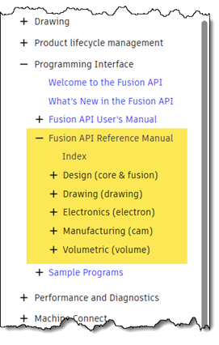
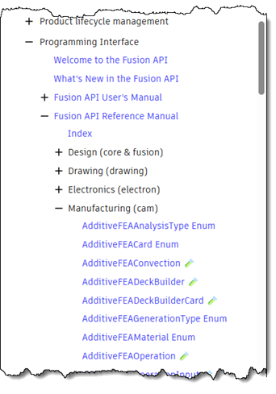

Electronics API
Fusion Electronics now provides initial Python API support for accessing core electronics design data, enabling programmatic access to schematic, board, and library content through the existing Fusion API framework. This first step introduces read-only support in the Fusion API, but stay tuned for more!
New API Help Layout
With the addition of more and more API functionality across Fusion, it became necessary to reorganize the Reference Manual into different namespaces. This improves organization and makes each section smaller, so it's quicker to find what you're looking for.
The previous single-list layout did have the advantage of allowing you to use the browser's find functionality to search for a name. To preserve that capability, a new "Index" topic has been added that opens a page listing all objects, methods, and properties.

To reduce the depth of the table of contents, there are no longer separate "Object" and "Enum" folders. Instead, they have been combined directly under each namespace folder.

More Sheet Metal API
API support for additional sheet metal functionality has been added, and more is coming. You can now convert a body into a sheet metal part and create fold and unfold features.
Construction Plane on Curved Face
The API now supports creating a construction plane through the axis of a curved face using the ConstructionPlaneInput.setByAngleOnCurvedFace method.
Support for User Coordinate Systems
The API now fully supports user coordinate systems. You can create, query, and edit user coordinate systems.
Find Meshes Along a Ray
A new API method, Component.findMeshUsingRay, allows you to detect meshes intersecting a ray. This enables new automation scenarios for analysis and selection workflows.
The new MeshBody.calculateCollisionsWithRay method lets you find all intersections between a ray and a specific mesh body.
Specify Units for STL Export
You can now specify the desired units when exporting STL files. Previously, STL export always used the document units. The STLExportOptions object now supports the STLExportOptions.unitType property.
API for the New Assembly Constraint Functionality Is Still in Progress
Portions of the API for the new assembly constraint functionality were previously added. Because this is preview functionality and the underlying Fusion functionality continues to evolve, we need to make changes to the API. If you begin using this API now, be aware that your existing code will likely need to be updated in future releases.
There was a problem with the timeline when using the API to change a hole to a tapped hole. This issue has been fixed.
Custom Features is new functionality that is currently in preview. This release does not include any new Custom Features functionality, but we still encourage you to try it and let us know your thoughts.
You can learn more in the Custom Feature topic in the API User Manual. That document also references two add-in samples you can use to explore the functionality.
This functionality is provided as a preview of intended future API capabilities. You are encouraged to use it and report any problems or suggestions using the Fusion API and Scripts Forum. However, because this functionality is still in preview, it may change and could break existing programs that depend on it. Therefore, you should avoid shipping production programs that rely on preview capabilities.
| Name | Description |
| AdditiveFEAUtility | AdditiveFEAUtility provides functionality for additive FEA simulation operations. |
| AdditiveInterferenceAnalysisResult | Result of an additive interference analysis operation. |
| Arc | Circular arc in a PCB board, schematic sheet, symbol, or package. |
| Area | Rectangular bounding region defined by corner coordinates. |
| Board | Represents a PCB in an electronics design. Provides access to elements, signals, layers, and design-rule checks. |
| Bus | Group of related nets in a schematic; wires can be drawn as a bus and named with a pattern to derive net names. |
| Busses | The Busses collection provides access to all of the buses within a sheet or schematic. |
| Circle | Circle primitive drawn on a PCB board, schematic sheet, symbol, or package. |
| Circles | The Circles collection provides access to all of the circles within a board, sheet, symbol, or package. |
| Class | Net class definition (design rules configuration); assigns trace width, drill, and other constraints. |
| Classes | The Classes collection provides access to all of the net class definitions within a schematic or board. |
| ConstructionPlaneAtAngleOnCurvedFaceDefinition | ConstructionPlaneAtAngleOnCurvedFaceDefinition defines a ConstructionPlane by an angle around the axis inferred from a curved face. |
| Contact | Contact point (pad or SMD) in a package that connects to a signal. |
| ContactRef | Reference connecting a signal to a pad or SMD on a placed component. |
| ContactRefs | The ContactRefs collection provides access to all of the contact references within a signal. |
| Contacts | The Contacts collection provides access to all of the contacts (pads and SMDs) within a package. |
| Device | Package variant within a device set; combines a symbol configuration with a specific package. |
| Devices | The Devices collection provides access to all of the devices within a device set. |
| DeviceSet | Definition of a device set in a library. Groups devices with different packages but the same symbol and gate configuration. |
| DeviceSets | The DeviceSets collection provides access to all of the device sets within a library. |
| Dimension | Dimension annotation on a PCB board or schematic sheet that displays measured distances, angles, or radius. |
| Dimensions | The Dimensions collection provides access to all of the dimensions within a board or sheet. |
| EcadAttribute | Attribute (name-value pair) on an element, instance, or part. |
| EcadAttributes | The EcadAttributes collection provides access to all of the attributes within a parent object. |
| EcadDesign | Represents an electronics design that contains both schematic and board representations. |
| EcadDocument | Base class for electronics design documents that can be opened in the application (design, schematic, board, library). |
| EcadObject | Base class for all electronics design objects. |
| ElectronicsExportManager | Manages export of an electronics document to various formats. Obtain an instance via the exportManager property on Board, Schematic, or Library. |
| ElectronicsExportOptions | Options that control how an electronics document is exported. Obtain an instance from one of the factory methods on ElectronicsExportManager (e.g. board.exportManager.createEagleBrdExportOptions). |
| ElectronManager | The main Electronics singleton. |
| Element | Placed component instance on a PCB. |
| Elements | The Elements collection provides access to all of the elements within a board. |
| Error | Single design rule check (DRC) or electrical rule check (ERC) error. |
| Errors | The Errors collection provides access to all of the DRC or ERC errors within a board or schematic. |
| Frame | Frame element (drawing border or title block) on a board or sheet. |
| Frames | The Frames collection provides access to all of the frames within a board or sheet. |
| Gate | Gate (logical sub-unit) within a device; references a symbol and defines placement and add behavior. |
| Gates | The Gates collection provides access to all of the gates within a device set. |
| Grid | Represents the design grid settings for a board, schematic, or library. |
| Hole | Non-plated through-hole drill in a PCB board or package. |
| Holes | The Holes collection provides access to all of the through-holes within a board or package. |
| Instance | Placed part instance (component reference) on a schematic sheet. |
| Instances | The Instances collection provides access to all of the part instances within a schematic sheet. |
| Junction | Connection point where two or more net wires meet on a schematic sheet. |
| Junctions | The Junctions collection provides access to all of the junctions within a segment. |
| Label | Label (net name annotation) on a schematic sheet, net, or bus. |
| Labels | The Labels collection provides access to all of the labels within a net, segment, or sheet. |
| Layer | Layer in a board, schematic, or library. |
| Layers | The Layers collection provides access to all of the layers within a board, schematic, or library. |
| Libraries | The Libraries collection provides access to all of the libraries within a design (board or schematic). |
| Library | Represents a library document in an electronics design. Contains reusable components including symbols, packages, device sets, and devices. Can be opened as a standalone document or referenced within a design. |
| Module | Reusable block in a hierarchical schematic, containing parts, ports, and nested sheets. |
| ModuleInstance | Placed reference to a module on a schematic sheet. |
| ModuleInstances | The ModuleInstances collection provides access to all of the module instances within a schematic or sheet. |
| Modules | The Modules collection provides access to all of the modules within a schematic. |
| Net | Logical connection (net) in a schematic; groups pins and ports that are electrically connected. |
| Nets | The Nets collection provides access to all of the nets within a sheet or schematic. |
| Package | Footprint definition in a library; defines pad layout and silk screen for PCB placement. |
| Package3d | 3D model definition in a library; can be attached to footprints for 3D board visualization. |
| Packages | The Packages collection provides access to all of the packages (footprints) within a library. |
| Packages3d | The Packages3d collection provides access to all of the 3D packages within a library or device. |
| Pad | Through-hole pad in a package. |
| Pads | The Pads collection provides access to all of the pads within a package. |
| Part | Component definition in a schematic sheet or module; has a name, value, and references a device. |
| Parts | The Parts collection provides access to all of the component definitions (parts) within a sheet or module. |
| Pin | Electrical connection point in a symbol; defines position, direction, and display. |
| PinRef | Reference linking an instance, part, and pin in a net segment. |
| PinRefs | The PinRefs collection provides access to all of the pin references within a net segment. |
| Pins | The Pins collection provides access to all of the pins within a symbol. |
| PolyCutout | Polygon cutout region that subtracts from signal polygons in the same layer. |
| PolyCutouts | The PolyCutouts collection provides access to all of the polygon cutouts within a board, symbol, or package. |
| PolyPour | Copper pour polygon belonging to a signal; filled (solid or hatched) copper area. |
| PolyPours | The PolyPours collection provides access to all of the copper pour polygons within a signal. |
| PolyShape | Simple polygon shape on a board, schematic sheet, symbol, or package; no copper fill. |
| PolyShapes | The PolyShapes collection provides access to all of the polygon shapes within a board, sheet, symbol, or package. |
| Port | Connection point that exports a net from a module to the outside; defines the interface for hierarchical schematics. |
| PortRef | Reference that connects a net to a port on a module instance. |
| PortRefs | The PortRefs collection provides access to all of the port references within a net or segment. |
| Ports | The Ports collection provides access to all of the ports within a module. |
| Rectangle | Rectangle primitive drawn on a PCB board, schematic sheet, symbol, or package. |
| Rectangles | The Rectangles collection provides access to all of the rectangles within a board, sheet, symbol, or package. |
| Schematic | Represents a schematic in an electronics design. Provides access to sheets, parts, nets, and electrical-rule checks. |
| Segment | Wire segment group within a net or bus; connects pin references, port references, and wires. |
| Segments | The Segments collection provides access to all of the segments within a net or bus. |
| Sheet | Represents one page of a multi-sheet schematic. |
| Sheets | The Sheets collection provides access to all of the sheets within a schematic. |
| Signal | Copper trace network in a PCB board; connects pads and vias through wires and polygon pours. |
| Signals | The Signals collection provides access to all of the copper trace networks (signals) within a board. |
| Smd | Surface-mount (SMD) pad in a package. |
| Smds | The Smds collection provides access to all of the SMD pads within a package. |
| Spline | Spline curve on a PCB board, schematic sheet, symbol, or package. |
| Splines | The Splines collection provides access to all of the splines within a board, sheet, symbol, or package. |
| Symbol | Schematic symbol definition from a library; contains pins, wires, circles, and other graphic primitives. |
| Symbols | The Symbols collection provides access to all of the symbols within a library. |
| Technologies | The Technologies collection provides access to all of the technology variants within a device. |
| Technology | Technology variant of a device; each variant has a name and technology-specific attributes. |
| Text | Text annotation on a PCB board, schematic sheet, symbol, or package. |
| Texts | The Texts collection provides access to all of the texts within a board, sheet, symbol, or package. |
| Units | Static methods that convert internal units to physical units (mm, inch, mil, micron). |
| UserCoordinateSystem | Represents an existing User Coordinate System in a design. |
| UserCoordinateSystemGeometry | A transient object used to define and query the geometric input for a user coordinate system and the resulting coordinate system it defines. New UserCoordinateSystemGeometry objects are created using the static create method and are then used as input to the UserCoordinateSystems.createInput method. |
| UserCoordinateSystemInput | Defines all of the information required to create a new User Coordinate System. This object provides equivalent functionality to the User Coordinate System command dialog in that it gathers the required information to create a User Coordinate System. |
| UserCoordinateSystems | Provides access to the user coordinate systems within a component and provides methods to create new user coordinate systems. |
| Variant | Per-assembly-variant configuration of a part; specifies populate, technology, and value for one variant definition. |
| VariantDef | Assembly or build variant that controls which parts are populated in a schematic or board. |
| VariantDefs | The VariantDefs collection provides access to all of the variant definitions within the schematic. |
| Variants | The Variants collection provides access to all of the per-assembly-variant configurations for a part. |
| Via | Plated through-hole or blind/buried via connecting layers in a PCB board. |
| Vias | The Vias collection provides access to all of the vias within a signal or board. |
| VolumetricModelFeature | Object that represents an existing volumetric model feature. |
| VolumetricModelFeatureInput | This class defines the methods and properties that pertain to the definition of a volumetric model feature. |
| VolumetricModelFeatures | Collection that provides access to all of the existing volumetric model features in a component and supports the ability to create new Volumetric Model features. |
| Wire | Straight or curved line segment in a PCB board, schematic sheet, symbol, or package. |
| Wires | The Wires collection provides access to all of the wires within a board, sheet, signal, or polygon. |
| Name | Description |
| AdditiveFEADeckBuilder.createWarpInputCard | Creates the *INPU card. |
| AdditiveFEAOperation.noteIconColor | The color of the note icon. This represents the color of the note icon in the browser, which is displayed next to the operation name when the operation has notes. |
| BaseComponent.userCoordinateSystems | Returns the user coordinate systems collection associated with this component. This provides access to the existing user coordinate systems and supports the creation of new user coordinate systems. |
| BRepBody.convertToSheetMetal | Converts the current BRepBody to a sheet metal body. This is applicable only if the body is not already a sheet metal body (isSheetMetal is false). |
| BRepBody.findThicknessAtFace | Finds the thickness of the body at the specified face by casting a ray from the face along its inward normal and measuring the distance to the first opposite face of the body that is hit. |
| CAM.analyses | Gets the collection of design analyses associated with this design, created in the Manufacture workspace. |
| CAMAdditiveContainer.noteIconColor | The color of the note icon. This represents the color of the note icon in the browser, which is displayed next to the operation name when the operation has notes. |
| CAMFolder.noteIconColor | The color of the note icon. This represents the color of the note icon in the browser, which is displayed next to the operation name when the operation has notes. |
| CAMHoleRecognition.noteIconColor | The color of the note icon. This represents the color of the note icon in the browser, which is displayed next to the operation name when the operation has notes. |
| CAMPattern.noteIconColor | The color of the note icon. This represents the color of the note icon in the browser, which is displayed next to the operation name when the operation has notes. |
| CAMTemplate.createEmptyHoleTemplate | Create an empty CAMTemplate. This template will represent a hole template. |
| CAMTemplate.isValidTemplate | Whether or not this template is in an appropriate state to be used. This means it has operations and, for hole templates, has an appropriate hole signature. |
| Component.findMeshUsingRay | Finds all mesh bodies that are intersected by the specified ray. |
| Component.userCoordinateSystems | Returns the user coordinate systems collection associated with this component. This provides access to the existing user coordinate systems and supports the creation of new user coordinate systems. |
| ConstructionAxis.isUCSGeometry | Returns true if this ConstructionAxis is part of a User Coordinate System (UCS). |
| ConstructionAxis.parentUCS | Returns the UCS this ConstructionAxis is part of. Returns null if this axis is not part of a UCS. |
| ConstructionPlane.isUCSGeometry | Returns true if this ConstructionPlane is part of a User Coordinate System (UCS). |
| ConstructionPlane.parentUCS | Returns the UCS this ConstructionPlane is part of. Returns null if this plane is not part of a UCS. |
| ConstructionPlaneInput.setByAngleOnCurvedFace | This input method is for creating a construction plane through the axis inferred from a cylindrical or conical curved face at a specified angle. This can result in a parametric or non-parametric construction plane depending on whether the parent component is parametric or is a direct edit component. |
| ConstructionPoint.isUCSGeometry | Returns true if this ConstructionPoint is part of a User Coordinate System (UCS). |
| ConstructionPoint.parentUCS | Returns the UCS this ConstructionPoint is part of. Returns null if this point is not part of a UCS. |
| Features.volumetricModelFeatures | Returns the collection that provides access to volumetric model features within the component and supports the creation of new volumetric model features. |
| FlatPatternComponent.findMeshUsingRay | Finds all mesh bodies that are intersected by the specified ray. |
| FlatPatternComponent.userCoordinateSystems | Returns the user coordinate systems collection associated with this component. This provides access to the existing user coordinate systems and supports the creation of new user coordinate systems. |
| MeshBody.calculateCollisionsWithRay | Finds all points that are intersected by the specified ray. |
| NCProgram.noteIconColor | The color of the note icon. This represents the color of the note icon in the browser, which is displayed next to the operation name when the operation has notes. |
| Operation.noteIconColor | The color of the note icon. This represents the color of the note icon in the browser, which is displayed next to the operation name when the operation has notes. |
| OperationBase.noteIconColor | The color of the note icon. This represents the color of the note icon in the browser, which is displayed next to the operation name when the operation has notes. |
| PMIGeometricValueTolerance.hasShaftToleranceClass | Gets whether there is a shaft tolerance class set. |
| PMIGeometricValueTolerance.shaftToleranceClassDeviation | Gets the shaft tolerance class deviation value. Returns empty string if there is no tolerance class deviation value set. |
| PMIGeometricValueTolerance.shaftToleranceClassGrade | Gets the shaft tolerance class grade value. Returns empty string if there is no tolerance class grade value set. |
| RefoldFeature.unfoldFeature | Returns the unfold feature associated with this refold feature. A refold feature always has an associated unfold feature because they are created together in a group. |
| Setup.noteIconColor | The color of the note icon. This represents the color of the note icon in the browser, which is displayed next to the operation name when the operation has notes. |
| UnfoldFeature.refoldFeature | Returns the refold feature associated with this unfold feature, or null if there is no associated refold. Unfold and refold features are often created together in a group. |
Help created: Thursday, May 28, 2026 9:41 AM